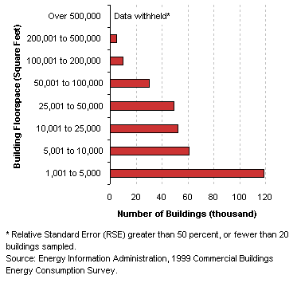
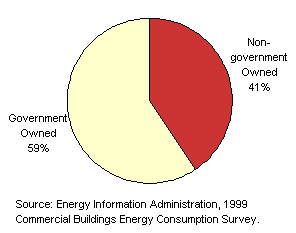
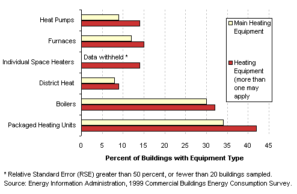
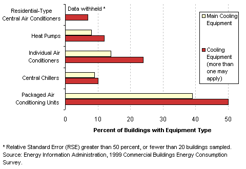
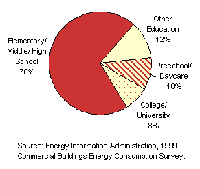
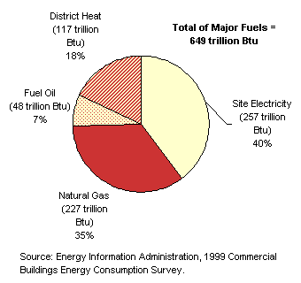

| |
|
Characteristics
by Activity...
Education
|
Education
buildings are
buildings used for academic or technical classroom instruction,
such as elementary, middle, or high schools, and classroom
buildings on college or university campuses.
Basic Characteristics
[ See also: Equipment | Activity
Subcategories | Energy Use
]
|
Education
Buildings...
- Seventy percent of education buildings were part
of a multibuilding campus.
- Education buildings in the South and West were
smaller, on average, than those in the Northeast and Midwest.
- Almost two-thirds of education buildings were
government owned, and of these, over three-fourths were owned
by a local government.
Tables:
Top
|
|
Number
of Education Buildings by Building Size Category

Ownership
of Education Buildings

|
Equipment
Table:
Buildings,
Size, and Age Data by Equipment Types
Predominant
Heating Equipment in Education Buildings

Predominant
Cooling Equipment in Education Buildings

Computers
and Photocopiers in Education Buildings
Top
Activity
Subcategories
| Building
respondents who reported that their building was an education building
were then asked to place the building into the following more specific
categories:
- a preschool
or daycare
- an elementary,
middle, or high school
- a college
or university
- some other
type of education building
There were
enough buildings in the responding sample to report statistics for
all of these types. Some examples of buildings found in the other
type of education building category are job-related training centers,
adult education centers, special education schools, and religious
education buildings. |
|
Education
Buildings by Subcategory |
There were approximately 25 thousand college or university
classroom buildings; 96 percent of these (24 thousand buildings) were
found on a multibuilding campus; of the approximately 230 thousand elementary,
middle, or high school buildings, 72 percent (166 thousand buildings)
were part of a campus.
Table: Selected
Data by Type of Education Building
Top
Energy
Use
| Education
buildings used 649 trillion Btu of total energy, which was 11 percent
of total energy consumption for all commercial buildings. Since they
comprised 13 percent of commercial floorspace, this means that their
total energy intensity was lower than the commercial average. |
| Education
buildings used the most total fuel oil of all building types, and
also used it the most intensively. They were also one of the few
building types to use a substantial amount of district heat.
Tables:
Reference:
What is a Btu?
|
|
Energy Consumption in Education Buildings by Energy Source

|
The total energy
consumption data in the figures and tables above are “site energy,”
which includes only the amount of electricity consumed within the
building; energy use can also be expressed as “primary energy,”
which includes the energy consumed during the generation and transmission
of electricity. Education buildings used 777 trillion Btu of primary electricity,
so their total primary energy consumption was 1,169 trillion Btu, or 10
percent of total primary energy consumption for all commercial buildings.
Top
Specific questions may be directed to:
Joelle Michaels
joelle.michaels@eia.doe.gov
CBECS Manager
Release date: July 24, 2002
Page last modified:
May 4, 2009 2:52 PM
http://www.eia.gov/consumption/commercial/data/archive/cbecs/pba99/education/education.html
If you are having any technical problems with this
site, please contact the EIA webmaster at wmaster@eia.doe.gov. |